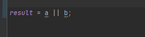
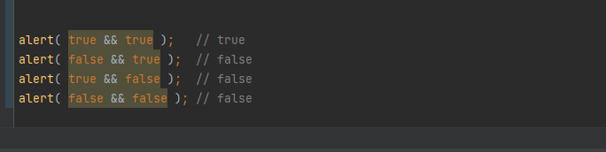
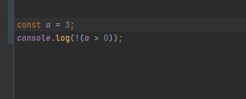

Оператор «ИЛИ» выглядит как двойной символ вертикальной черты:

оператор || используется в if для проверки истинности любого из заданных условий.
сли какой-либо из аргументов true, он вернёт true, в противоположной ситуации возвращается false
возвращает true, если оба аргумента истинны, а иначе – false:
НЕ представлен восклицательным знаком !.меняет логическое значение операнда с истины в ложь и наоборот.
